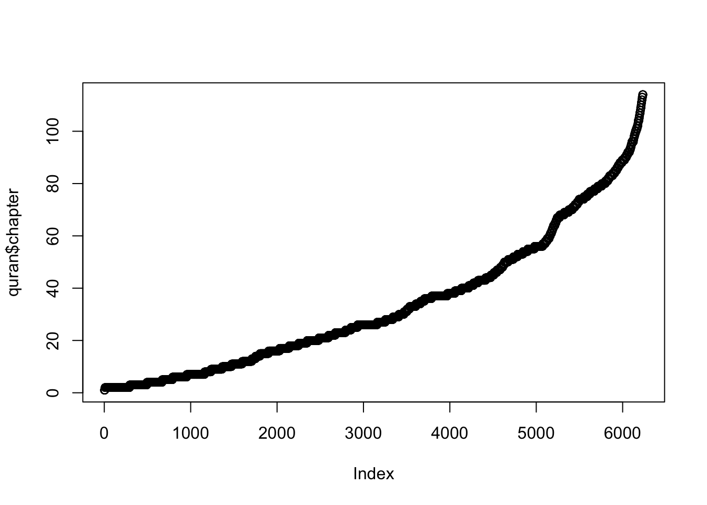

Chapter 3 The Text of Quran and Rules
I strongly advise readers to skip this preparation chapter and start reading the coding evidences chapters of the 19 System, especially from the chapters Chapter 4 and Chapter 5. This whole chapter has technical details about the used text and the rules and so on, which you ca later revisit and read when you have more time and energy.
3.1 About the Text of Quran
Hafs mushaf, which is used by around 97% of Muslims around the world, was used for the text analysis of Quran in this book. Under this chapter, I will discuss all the details about the text of Quran I used to perform text analysis over it. In 2019, I first started analyzing possible 19 based codings over the text of Quran to see if there is a system based on rules. I discovered many interesting codings that suggested a system. I finished the analysis and wrote the book and published it online in September 7, 2019. The server where I downloaded the text of Quran is from the Tanzil project. From the Tanzil server at http://tanzil.net/download/, I downloaded and used the “Simple Clean” text type that does not include haraka marks or any pause marks or the other options available in the server. Those options already are not part of the main text. Tanzil is almost the common server for most online Quran related web sites. I did not cherry pick a version of my choice to download. The reason I downloaded the “Simple Clean” text is because, as I did not know Arabic, I searched a tutorial that performs text analysis with R computer programming language over the text of Quran and found this one at (Sharaf 2019b), which was using that “Simple Clean” text type for text analysis. So, the text type was not my choice but I followed the tutorial, which was already using the most suitable text version for the text analysis of Quran as it only contains the letter characters of words but no other helper marks.
When I downloaded the text of Quran from http://tanzil.net/download/ in 2019, the released text version was Version 1.0.2 and that version was released on May 12, 2008 and it was online without any error until I downloaded and used it for the analysis of this book. Sometime after the publication of my book based on that long available text, Version 1.0.2, they decided to make a few “optional” non-essential changes, based on their choice, and released it as text Version 1.1 on February 12, 2021. You can see details about the update on on https://tanzil.net/updates/. They made the particular word, “ba’dama” written as two words as “ba’da ma” instead of the previous form of one word. I have made a research on that particular word for about a year and explained all the details I gathered and concluded about it on Chapter 8.1. Upon my research I concluded that “ba’dama” should be written as one word and decided to continue using the text Version 1.0.2 of Quran. You can see my long research summary on the topic on Chapter 8.1. You can currently download it from the github account of this book on https://github.com/quran2019/Quran19/blob/master/quran-simple-clean.txt.
Let’s not distract further from the book and continue discussing on the text analysis and the topics around it. Interested people mostly ask about the text I used and the reasons why I did not use a classical paper printed ones with the haraka helper marks. First of all, I did not cherry picked this text, as I mentioned before, I found and followed this tutorial (textminingthequran.com/tutorial/quran.html), where the author used this simple text of Quran for his own text analysis. However, it turned out to be that this manuscript is the most suitable according to my investigations. Because, I wanted to count only the natural numbers of the text, which are number of chapters, verses, words and letters. I did not need the helper added marks along with the text and this text appears to be just right for this. The author of the tutorial did his PhD in around the text analysis of Quran and it is reasonable to consider that he might have selected this text as it is the most suitable one for the text analysis of Quran.
Among almost all the written old or modern Hafs mushafs, the only difference should be when we count the number of letters as some words might be written slightly differently, which does not change the meaning of the word. Scribal errors are also known facts that might exist in the earlier hand written manuscripts. When it comes to the earlier manuscripts, there is no single reference manuscript to be the reference for all the rest of the manuscripts that follows it up to the last letter of it. The famous early Uthmanic mushafs might be considered as the reference in general but there is no original copy of the first written ones and the currently available ones are “at best, the copies of the copies of the copies of the original ones, written at least 4 generations later”, as Dr.Shehzad Saleem replied to my question during his interview with me about the history of Quran (Saleem and Altay 2020). Since the main medium of the transmission of Quran is via oral transmission with the tradition of memorizing Quran by the large number of dedicated people, called Hafez, who memorize Quran in its entirety, any written text that precisely follows the classic Arabic grammar rules and also approved by Muslim scholars as fully representing Quran might be used to see whether there is a systematic coding design over it. Basically, the hypothesis is that “there might be a rule based system in the text of Quran, if the text represents Quran precisely and fully with the condition that the text is written with respect to classic Arabic grammar rules”. Because, we learn from Quran that it is written in Arabic and therefore we should have the text written in classic Arabic with its grammar rules.
Quran, 12.2: “Indeed, We have sent it down as an Arabic Quran so that you may understand.” (Translations are from quran.com, the Clear Quran).
Quran, 41.44: “Had We revealed it as a non-Arabic Quran, they would have certainly argued, “If only its verses were made clear ˹in our language˺. What! A non-Arabic revelation for an Arab audience!” Say, ˹O Prophet,˺ “It is a guide and a healing to the believers. As for those who disbelieve, there is deafness in their ears and blindness to it ˹in their hearts˺. It is as if they are being called from a faraway place.” ”
Quran, 13.37: “And so We have revealed it as an authority in Arabic. And if you were to follow their desires after ˹all˺ the knowledge that has come to you, there would be none to protect or shield you from Allah.”
Therefore, in my opinion, any old or modern, text that is written in the classic Arabic grammar and accepted as fully representing the Quran (Hafs recitation/mushaf) by scholars might be considered for the text analysis to see if there is a meaningful rule based systematic coding design over the text that suggest that the text is intact and unchanged. In the end, the recitation (the Zikr / the Reminder) was declared to be protected by God but not the text of the book in the verse 15:9.
Quran, 15.9: “It is certainly We Who have revealed the Reminder, and it is certainly We Who will preserve it.”
Without being aware of much of the above information in the beginning of my study for this book in the early 2019, I had hypothesized that, the text of Quran can well be designed by God to the last letter of it and I discovered the codes that includes all the letters information as can be seen in Chapter 4.2 and in some other chapters. I presented them separately from the main evidences, which are presented in Chapter 4, Chapter 4.1.2 and also Chapter 5, which do not include letter information but just word information regarding the content and thus might be considered as universal as it is applicable to all the common Hafs mushafs from history to our current date. Because, although the writing of the words might slightly change, all the words are the same as they do not change the meaning of the words. Because of this fact, the codes that includes letter information are always considered weaker compared to the codes that do not include letter information as the data without letters information can be considered as intact and reliable for all the common Hafs mushafs that have been used by the majority of Muslims till now.
The codes with letters information are considered valid only if there is no apparent error about a letter with respect to the classic Arabic language. We know there are various ways of writing the same words with slightly different letters in some cases though it gives the same meaning when it comes to Hafs recitation. Although people recite Quran correctly, they overlook those letter changes among the texts and just ignore them as they know how to recite the word anyways. In case if there is any single letter is found to be apparently erroneous in the text I used, then, most probably, all the letter incorporating codings that I present in this book should collapse. So, feel free to reach out to me if you are 100% sure that there is an error in any of the 332837 total letters of the text of Quran manuscript I used. Nonetheless, make sure to consult with an expert on Arabic language before coming to conclusion on this as there are already known variations in writings of some of the words. Because of these variations in writings, I consider the codings in my book that includes the letters information as weaker evidences compare to others. Since the first publication of the book, I never received solid mathematical objection to the codes I presented but the ones who tried to falsify, always first attacked the letters information I used by ignoring the main code evidences. I suggest those kinds of people to ignore all the letters based evidences, which I already designated as weaker, and look at first the main evidences that do not include letters information. Therefore, I suggest to those kinds of readers to read first the main evidences and also the other evidences that do not include letters information and ignore the the letters based codings. If they see no issue with the main ones, then they have already witnessed the 19 system based on chapter, verse and words information, which indicates the intact design over the text and hence suggest that the text is intact and unchanged too. Certainly, these evidences have their own limits in proving the intact and unchanged text of Quran as the evidences can only go into the resolution of the number of words or letters per verse. However, for the ones without negative biases, it should indicate sufficient evidences as there is already one common Hafs manuscript used by Muslims. The question is not to select a manuscript among various text versions but to test whether or not there is a clear rule based system over the full text of the common Hafs manuscript.
Since the letter incorporating evidences that I presented are not the main evidences of this book, anyone who have doubts about the accuracy of the letters might just opt to ignore related chapters. It will not change the fact that the text of Quran appears to have a design up to its number of words in each verses along with chapters and verses as is when considering the main miraculous 19 based system I presented in Chapter 4, Chapter 4.1.2 and Chapter 5.
However, the ones who would like to genuinely consider the letters based evidences of this book might well have some questions considering the feedback I received after the first publication of this book. A question might pop up to some with extreme doubt, whether the volunteer people of the tanzil.net has deliberately made such a design considering the letters based evidences? Well, I know the answer on my side for sure. I discovered all the evidences in this book myself. I cannot know for sure the other side, the volunteer people of tanzil.net, as I do not know them. However, in my opinion, I am personally 100% sure that they did not do such a thing and even more, they cannot do such a design. Because, as I quoted above, they have written the text with respect to classic Arabic grammar rules and the early Hafs manuscripts. The only way, one can claim such an artificial design is if one can spot an artificial rule that is not meaningful and artificial or redundant for the text with respect to the classic Arabic grammar rules. In such a case one might claim that this text has artificial data in it or has letters against the classic Arabic grammar rules that might have been written in it deliberately to make such a design. However, there is no such case that I could observe. I have initially discovered the evidences in 2019 and as they mention in their web site as I quote in the below chapter, they did not receive any typo report since the release of the first version of the text in 2008. So, I see no reason to have that extreme paranoiac doubt. I addressed those extreme potential thoughts anyways in case some extremely skeptical people wonders about them. The other proof that the Tanzil has nothing to do with such 19 based codings is that they changed the writing of one word in their latest updated text in February 2021. They were writing a word as a single word and they changed it into two words after 13 years of their last update since 2008. If their change was correct regarding classic Arabic grammar rules, then the codes with words information in this book would collapse as they mostly include words count information. But after my long research, it turned out to be that they are wrongly changed it after the publication of my book. I discuss on this phenomenal event and my research on the topic in the Chapter 8.1 and Chapter 8.1.1
3.1.1 Fetching Quran’s Text into R
I will mainly show, first, how to fetch the text of Quran into R programming environment, then compute some of the important descriptive natural numbers of the text of Quran but I will not analyze those numbers in this chapter and leave it to the chapters about evidences such as Chapter 4.1.2.
I downloaded the text of Quran from tanzil.net/download in early 2019 to start the analysis about the text of Quran. Arabic speakers do not need punctuation, namely helper marks, and thus there are no punctuation in the early texts as we see today in most modern Quran texts. I am not able to speak in more technical details as I do not know Arabic. After searching the internet, I found this tutorial (textminingthequran.com/tutorial/quran.html) and I followed it for some initial text analysis on the text of Quran. In order to download the text of Quran that I used for the text analysis in this book, as instructed in the mentioned tutorial, we go to the tanzil.net/download and select “Simple Clean” option without any pause marks or other options. For this, deselect “Include pause marks” and “Include sajdah signs” options. These are all marks not part of the simple and pure text but added later to ease the reading. Then select “Text(with aya numbers)” option and click download button. This way you will get a pure text of Quran in your computer with verse (“aya” in Arabic) numbers. In this file, there are “sura” numbers (sura is in Arabic for chapter) followed by verse numbers followed by the actual text of the verses. You can open it in a text editor and better see its text structure. Each field is separated by a bar “|” symbol and there is also some copyright notes at the end of the text, which are all added by tanzil.net as part of their work. Therefore, we remove them first, as you will see below while reading about fetching the downloaded text file into the R programming environment. They do not mention the text version at the download page but when I downloaded in 2019, the text version was Version 1.0.2. All the logs of the updates of the text can be seen in this page:https://tanzil.net/updates. It was released in May 12, 2008 and around 18 months after the publication of my book on the text Version 1.0.2, they updated it on February 12, 2021 as Version 1.1, with a few “optional” changes as they describe in the updates page. In this book, I still use the text version Version 1.0.2 and a long discussion about their updates and its consequences can be read in the Chapter 8.1 and Chapter 8.1.1. In the current chapter, I will continue the technical details of how I analysed the text. So, if you use the tanzil.net/download page to download the text, you can download the Version 1.1 and need to revert back the mentioned few changes back to get the text Version 1.0.2. Or, you can use the text I had downloaded, used and backed up in the github account of this book on this url: https://github.com/quran2019/Quran19/blob/master/quran-simple-clean-v.1.0.2.txt. The text in that link is the Quran text Version 1.0.2 that I had downloaded from tanzil.net/download in early 2019 and used for the text analysis of this book. You can also download it and use it to run the codes in this book over that downloaded text.
Everything is constructed from smaller components. When it comes to the text of a book, the main components are letters, words, verses and chapters. Therefore, I had first searched over these components if there is any 19 based coding design patterns over them. As you will see in the chapters of evidences , there are indeed 19 based coding system over the text of Quran with rules based patterns. I think, I might not have discovered all the system yet but the evidences I provide are sufficient to witness a beautiful and strong 19 based coding system of the text of Quran, which will be contributed by this book to the literature for the first time as further proofs that support the belief that Quran is intact and unchanged from the beginning.
In the following of this chapter, you will see how to fetch the text of Quran into R programming environment and also perform some basic text processing and get the important descriptive numbers of Quran.
An important point to remind is that the structure of the text of Quran is also unique and not the same as any other book we might come across. All the verses are numbered but there are 112 unnumbered and repeated Basmala verse in front of all the 112 chapters out of the 114 chapters. Also the first verse of the first chapter is the numbered Basmala verse. Moreover, Chapter 9 does not have any Basmala verse in contrary to the rest of 113 chapters but interesting enough Chapter 27 has a Basmala verse within its chapter content. So, it looks like there is this non-standard structure and deliberate organization of the text. It leaves the question whether to refer the total descriptive numbers (e.g. verse, words and letters) with respect to only the numbered verses or together (numbered and unnumbered Basmala verses). In my analysis, I analyzed both of them at the same time and concluded that they should be designed together and both types of descriptive numbers of the text are valid because the system I discovered suggests that they were designed together as you will see in the chapters of the evidences. So, I will always refer both of the types of the text of Quran with respect to, first, the 6236 numbered verses only and, second, the 6348 numbered and unnumbered verses together or in other words, all the 6348 verses.
Before going any further, one tiny point I want to mention about the text of Quran is about the punctuation. Arabic speakers do not need them and thus they are already not part of the original text but they were added as helper markers later on for especially non-Arabic speakers such as Turkish speaking people like me. I would not normally even talk about this point but when I had a discussion with one of my non-Muslim friends, he made an argument based on those punctuation marks and claimed that the text of Quran has been changed as other earlier holly books. I was quite surprised that even such a simple fact was being used as an argument and he got this misinformation from the internet as he later searched about this. Anyway, in short, punctuation marks are not part of the original text of Quran and I did not include them in text analysis. If one have doubts about it, she should feel free to speak to an Arabic expert about it.
In order to be able to process and analyze the text of Quran, we need to fetch it into an R console. For that, I utilized this very useful tutorial at (Sharaf 2019b). As mentioned in that tutorial, in 2019, I downloaded the text file of Quran from http://tanzil.net/download/ with “Simple Clean” option without any pause marks or other options, and also with the “Text (with aya numbers)” option selected. I then downloaded text file in a folder with the name “data” under the current working directory. Since they updated the text with a tiny change on February 12, 2021 as explain above, you can only download the text version 1.0.2 from the github link I provided above from repository of this book.
We can run below R script to read Quran text file into R programming environment:
options(tinytex.verbose = TRUE)
tenzil = read.csv("data/quran-simple-clean-v.1.0.2.txt", header=F, stringsAsFactor=F, encoding="UTF-8", sep="|")
#head of the text
head(tenzil)## V1 V2 V3
## 1 1 1 بسم الله الرحمن الرحيم
## 2 1 2 الحمد لله رب العالمين
## 3 1 3 الرحمن الرحيم
## 4 1 4 مالك يوم الدين
## 5 1 5 إياك نعبد وإياك نستعين
## 6 1 6 اهدنا الصراط المستقيم## V1 V2
## 6259 # of the text, and shall be reproduced appropriately in all files NA
## 6260 # derived from or containing substantial portion of this text. NA
## 6261 # NA
## 6262 # Please check updates at: http://tanzil.net/updates/ NA
## 6263 # NA
## 6264 #==================================================================== NA
## V3
## 6259
## 6260
## 6261
## 6262
## 6263
## 6264It looks, the head of the data is clean and it is a table with three columns (a data frame in R). Each row contains one verse in order. First column contains the chapter numbers (or, in Arabic term, ‘sura’ numbers). Second column has verse numbers (or, in Arabic term, ‘aya’ numbers). Third column has the verses in Arabic.
However, there is some license related information appended to the tail of the text by tanzil.net. Let’s find where to clean it at the tail of the text file.
## V1 V2
## 6234 114 4
## 6235 114 5
## 6236 114 6
## 6237 # PLEASE DO NOT REMOVE OR CHANGE THIS COPYRIGHT BLOCK NA
## 6238 #==================================================================== NA
## V3
## 6234 من شر الوسواس الخناس
## 6235 الذي يوسوس في صدور الناس
## 6236 من الجنة والناس
## 6237
## 6238As we see the last verse appears to be in the row index of 6236. The last chapter (sura) in Quran is the Chapter Nas (sura-al-nas). Since it is very short, almost all Muslims would have memorized it and sometimes recite it in their regular daily prayers. Although, I am no expert in Arabic, I can also recognize it easily from the Arabic writing even without the helper punctuation that we non-Arabic speakers need to be able to read the Arabic text of Quran with the correct pronunciation. Without Arabic knowledge, even I can confidently recognize the last verse of Quran from the verse in the index 6236. So, as instructed in the tutorial, I remove the rest of the last verse to clean the additional general text related information added by tanzil.net. I keep this table as an the R object and named as quran to remember that this object keeps all the words and letters of Quran that we hold in our hand.
## V1 V2 V3
## 6231 114 1 بسم الله الرحمن الرحيم قل أعوذ برب الناس
## 6232 114 2 ملك الناس
## 6233 114 3 إله الناس
## 6234 114 4 من شر الوسواس الخناس
## 6235 114 5 الذي يوسوس في صدور الناس
## 6236 114 6 من الجنة والناسAs we see, the first column of the table keeps the chapter number, the second column keeps verse number and the third column keeps the text of each verse. Basically, each row of this table keeps the information about one verse in order. Let’s first give their correct names in English to the columns and see the table again.
## chapter verse text
## 1 1 1 بسم الله الرحمن الرحيم
## 2 1 2 الحمد لله رب العالمين
## 3 1 3 الرحمن الرحيم
## 4 1 4 مالك يوم الدين
## 5 1 5 إياك نعبد وإياك نستعين
## 6 1 6 اهدنا الصراط المستقيمLet’s also add the row names of the table into the table. Row names should keep the verse order from beginning to end, which we can also test it later on. Since Quran has an order and the order is important, we start given independent verse index numbers from first verse to the last as row names to be able to correctly access them later. I name the column of this independent verse indices as “VerseI” in the table. It is important to remember that this column is given by us independently and the verse indices per chapter that we refer when we quote any specific verse in Quran (such as this formal notation: 74:30).
quran <- cbind(as.numeric(rownames(quran)), quran)
colnames(quran)[1] = "VerseI"
quran$VerseI <- as.numeric(quran$VerseI)
quran$verse <- as.numeric(quran$verse)
quran$chapter <- as.numeric(quran$chapter)
head(quran)## VerseI chapter verse text
## 1 1 1 1 بسم الله الرحمن الرحيم
## 2 2 1 2 الحمد لله رب العالمين
## 3 3 1 3 الرحمن الرحيم
## 4 4 1 4 مالك يوم الدين
## 5 5 1 5 إياك نعبد وإياك نستعين
## 6 6 1 6 اهدنا الصراط المستقيم3.1.2 The categories of the main descriptive numbers
It is helpful to define the categories of the main descriptive numbers of the text of Quran to clarify this point. Because I will keep mentioning the categories of the numbers while defining the rules of the coding system in Chapter 3.2 and later present evidences with them.
There are four main descriptive numbers of Quran: the number of chapters, verses, words and letters. All the categories of the descriptive numbers of the text of Quran, except chapters, has numbered type and also the numbered and unnumbered type together versions because of the unique structure and organization of Quran that we observe in the book of Quran in our hands today. Basically, each of the three categories has two types Since the number of chapters has only numbered version, this category has a single number. Therefore, there are 7 main descriptive numbers of the text of Quran. In this chapter, I will compute them blindly via only the computer programming and provide its codes so that you can also reproduce and test those numbers from the text of Quran.
3.1.3 Number of chapters and verses, and sanity checks on the text
Let’s now first check if the indices of verses are in correct order. I will perform two tests here. First by the sum of all the index numbers, second by a simple plot and see if we observe what we expect for. We know that sum of the unique integer numbers from 1 to n is nx(n+1)/2 (by Gauss formula). Therefore, sum of the indices of the verses must be 6236x6237/2 = 19446966. In your computer, make sure its precision is capable of dealing with large numbers. Alternatively, you can also use a big number calculator such as this one (“Good Calculators” 2019).
Now let’s write a code to sum the index values in the table and see if it matches to 19446966 as it must be.
## the sum of verse index column VerseI is 19446966if(sum(quran$VerseI) == 19446966)
print("The sum of the indices of verses are correct and passed this test.")## [1] "The sum of the indices of verses are correct and passed this test."The first sum test passed for the indices of the verses. But, still in the middle or any other part of it the indices might be multiple of two numbers or more than the maximum 6236. Let’s see the minimum, which must be 1, maximum, which must be 6236, median, which must be 3118.5 (median of even number) from the data and also most importantly the number of unique indices that must be 6236 too.
print(paste("Minimum, Maximum, Median of VerseI is ",
min(quran$VerseI),",", max(quran$VerseI),",",median(quran$VerseI)))## [1] "Minimum, Maximum, Median of VerseI is 1 , 6236 , 3118.5"## [1] "Number of unique values of VerseI is 6236"As we see all are correct as expected. Let’s plot it and see if it is monotonically increasing from 1 to 6236.
The plot is exactly as we expected that is increasing monotonically from chapter 1 to 114. Let’s now check in a similar way, if the chapter numbers are in order and then observe the maximum number.

## [1] "Unique chapter numbers regarding the order of text: "## [1] 1 2 3 4 5 6 7 8 9 10 11 12 13 14 15 16 17 18
## [19] 19 20 21 22 23 24 25 26 27 28 29 30 31 32 33 34 35 36
## [37] 37 38 39 40 41 42 43 44 45 46 47 48 49 50 51 52 53 54
## [55] 55 56 57 58 59 60 61 62 63 64 65 66 67 68 69 70 71 72
## [73] 73 74 75 76 77 78 79 80 81 82 83 84 85 86 87 88 89 90
## [91] 91 92 93 94 95 96 97 98 99 100 101 102 103 104 105 106 107 108
## [109] 109 110 111 112 113 114The plot is exactly is as we expected as increasing in general but have horizontal lines at some points because of the long chapters.
So, based on the mathematical and visual tests, we conclude that the text of Quran analysed in this book, which was downloaded from tanzil.net, has no apparent error in its text regarding verse and chapter indices and ready for further analysis.
These sanity checks are purely based on mathematical blind computations on the text of Quran. Therefore, they also blindly provide the number of chapters as 114 and the number of verses as 6236. Therefore, these sanity checks provides reproducible tests to count the number of chapters and verses of Quran and they confirm that its number of chapters is 114, which will be denoted by ‘c’, and number of verses is 6236, which will be denoted by ‘v’ for the rest of the book in the R programming codes used. If we include the unnumbered Basmala verses as well, then we get, total number of verses that includes all the numbered verses and all the unnumbered verses (112 Basmalas) together, which is equal to 6236+112=6348 and we denote this number by ‘V’ for future reference in the R codes. We will demonstrate how those numbers are part of 19 based coding system in the Chapter 4.1.2.
3.1.4 Numbered and Unnumbered Verses of Quran
Regarding its importance for the analysis, I will separately test the numbered verses and the numbered and unnumbered verses and also together as they are two types of the text of Quran. Quran has an extraordinary structure than we used to see in other usual books and in that sense it also stands as unique. There are 114 chapters and they are all numbered from 1 to 114 and ordered deliberately as is in Quran. There are also verses and they are also numbered from 1 to the end of each chapter. For example, the first chapter, also the most famous one, al-Fatiha has chapter number 1 and it has 7 verses and each verses are numbered from 1 to 7. There is no such concept of paragraphs that we used to see in our books but in a sense each sentence or a group of sentences together corresponds to each verse and numbered. This is also very useful when we refer to a specific verse in Quran as we can easily quote two numbers to refer to it precisely. As an example, 19:38 refers to the chapter 19 and verse 38. Some verses are long and some verses are very short.
However, there is another interesting structural situation in the text of Quran. There is a special and repeated verse, Basmala (بسم الله الرحمن الرحيم), which is the first verse of the first chapter, namely 1:1 regarding its formal chapter and verse numbers. The translation of Basmala is “In the name of God, the merciful, the compassionate”. In Quran, this special verse is written before all the chapters except Chapter 9 of Quran and it is recited before start reciting any Quran verse by Muslims. In a sense, it is like a key. This makes Quran as a book consisting of numbered and unnumbered verses. Therefore, in the text analysis of Quran, I will consider two categories that represent the two fundamental structure of it. First one represents the whole Quran, including numbered and unnumbered 6348 verses. Second, represents only the numbered 6236 verses, which means without those repeated unnumbered Basmalas in front of the chapters. Since, these numbered and unnumbered verses are part of Quran, they both might have a role in the 19 based coding system of Quran. I will discuss about this and show some evidences on it in Chapter 4.1.2.
Now, I will generate a second R programming object that keeps only the numbered verses of Quran for further analysis on it. Let’s see first verses of some of the chapters in the main object that keeps the whole Quran.
## [1] "بسم الله الرحمن الرحيم" "الحمد لله رب العالمين"## [1] "بسم الله الرحمن الرحيم الم" "ذلك الكتاب لا ريب فيه هدى للمتقين"## [1] "بسم الله الرحمن الرحيم الم" "الله لا إله إلا هو الحي القيوم"As we see, tanzil.net has themselves included all the Basmalas inside the first verse of each chapter contrary to the written hard copy texts of Quran that Muslims have since the beginning till now. The tanzil.net probably might have done so for computational reasons to simplify the organization of the text. So, in the following, I will generate the second main table by separating those unnumbered Basmalas and get the table that keeps only the numbered verses of Quran.
require(data.table, quietly = T)
quran <- data.table(quran)
nQuran <- quran
nQuran$text <- gsub("^بسم الله الرحمن الرحيم ","",quran$text)
nQuran$text[nQuran$verse<=2 & nQuran$chapter==1]## [1] "بسم الله الرحمن الرحيم" "الحمد لله رب العالمين"## [1] "الم" "ذلك الكتاب لا ريب فيه هدى للمتقين"## [1] "الم" "الله لا إله إلا هو الحي القيوم"As we see, in this second object, only first chapter has first verse as Basmala and numbered but other chapters do not have it as this table contains only the numbered verses. Also, I assigned the special verse Basmala into the R object “Basmala” for future reference in this book. So this R object, denoted with nQuran, represents only the numbered verses of Quran. Let’s add one more column that keeps chapter and verse numbers together for easy referencing from the data table that I present below. It is a dynamic table, once can either search or download the analysis ready text for the 6236 numbered verses.
## Loading required package: DTdatatable(nQuran,
caption = 'Table head of the 6236 numbered verses of Quran.',
extensions = c('Buttons'),
options = list(pageLength = 5, autoWidth = TRUE,
dom = 'Blfrtip',buttons = c('excel', 'csv')
), rownames= FALSE)For future reference and analysis of chapter level text data of the numbered verses text type, I will also generate another table from this table, which holds the chapter indices and the number of verses per chapter as follows. I will assign this table into the R object dfVC for future reference in this book.
require(data.table, quietly = T)
require(DT)
versecomb <- c()
for(j in 1:114){
i <- which(nQuran$chapter==j)
versecomb <- c(versecomb, nQuran$verse[i[length(i)] ])
}
dfVC <- data.table(cbind(c(1:114), versecomb))
colnames(dfVC) <- c("Chapter_index","Verse_sum")
datatable(dfVC,
caption = 'Table: The chapter indices and corresponding sum of verses of numbered 6236 verses.',
extensions = c('Buttons'),
options = list(pageLength = 5, autoWidth = TRUE,
dom = 'Blfrtip', buttons = c('excel', 'csv')
),rownames= FALSE)3.1.5 Some text mining and tables of the text
Let’s prepare a more comprehensive data table that keeps some further information about the numbers of text of Quran using text mining tools of R. I utilized the tutorial in (Sharaf 2019a) and the R package (Mullen et al. 2018) to get each word and its frequencies, even the frequencies of the letters of it. I used the R programming language but I also used the ‘tokenizers’ text mining R package (Mullen et al. 2018) to get each word from the text of Quran.
I prefer to keep this book for all readers and thus will not go into details of explaining each lines of the code chunk below. In short, it computes the numbers of words and letters in both types of the text of Quran. I will keep using these R objects in the rest of the book as needed in the coming chapters.
require(tokenizers, quietly = T)
#All words in 6236 numbered verses
words <- unlist(tokenize_words(nQuran$text))
w <- length(words) # should be 77797
cat("Number of words in 6236 numbered verses is ", w)## Number of words in 6236 numbered verses is 77797#number of letters in numbered verses
letters <- sapply(words, nchar)
l <- sum(letters) #should be 330709
cat("Number of letters in 6236 numbered verses is ", l)## Number of letters in 6236 numbered verses is 330709#All words in numbered and unnumbered 6348 verses
Words <- unlist(tokenize_words(quran$text))
W <- length(Words) #should be 78245
cat("Number of words in numbered and unnumbered 6348 verses is ", W)## Number of words in numbered and unnumbered 6348 verses is 78245Letters <- sapply(Words, nchar)
L <- sum(Letters) #should be 332837
cat("Number of letters in numbered and unnumbered 6348 verses is ", L)## Number of letters in numbered and unnumbered 6348 verses is 332837Now, we obtained the number of words and letters per verse in both types of the text of Quran. Let’s add this information into the table of the numbered verses of Quran as follows.
vwords<- c()
vletters <- c()
for(i in 1:nrow(nQuran)){
tmpw <- unlist(tokenize_words(nQuran$text[i]))
vwords <- c(vwords,length(tmpw))
vletters <- c(vletters,sum(nchar(tmpw)))
}
nQuran<- cbind(nQuran[,1:3],vwords, vletters,nQuran[,4])
colnames(nQuran)[6] <- "text"
require(data.table)
require(DT)
tmpN <- nQuran
tmpN$CV <- paste(nQuran$chapter,nQuran$verse, sep = ":")
datatable(tmpN,
caption = 'Table of numbered 6236 verses of Quran',
extensions = c('Buttons'),
options = list(pageLength = 5,
autoWidth = TRUE,
dom = 'Blfrtip',
buttons = c('excel', 'csv')
), rownames= FALSE)## Warning in instance$preRenderHook(instance): It seems your data is too big for
## client-side DataTables. You may consider server-side processing:
## https://rstudio.github.io/DT/server.htmlFrom this data we can also get the number of unique words and its number of letters of Quran a presented in the next chapter. But, before that lets also generate the similar table for the whole Quran text, including unnumbered Basmala verses as follows. As see, we represent the table with unQuran R object to be able to use in the rest of the book.
unQuran <- c()
for(i in 1:114){
if(!(i %in% c(1,9))) {
tmp <- data.frame(1,i,0,4,19,as.character(nQuran$text[1]))
colnames(tmp) <- colnames(nQuran)
unQuran <- rbind(unQuran,tmp,
nQuran[nQuran$chapter==i,])}else{
unQuran <- rbind(unQuran,
nQuran[nQuran$chapter==i,])
}
}
unQuran$VerseI <- c(1:nrow(unQuran))
tmpUN <- unQuran
tmpUN$CV <- paste(unQuran$chapter,unQuran$verse, sep = ":")
datatable(tmpUN,
caption = 'Table of all 6348 verses of Quran',
extensions = c('Buttons'),
options = list(pageLength = 5,
autoWidth = TRUE,
dom = 'Blfrtip',
buttons = c('excel', 'csv')
), rownames= FALSE)## Warning in instance$preRenderHook(instance): It seems your data is too big for
## client-side DataTables. You may consider server-side processing:
## https://rstudio.github.io/DT/server.html3.1.5.1 The number of unique words in Quran
We had assigned all the word in the text of Quran to R objects words and Words in the previous sections. They contain each unique word in both types of the text of Quran. Then, it is very easy to compute the number of unique words and generate a table of it as follows.
## [1] TRUErequire(data.table)
uwordsTable<- data.table(uwords = names(tmp),
count = as.numeric(tmp),countW = as.numeric(tmp2),
uletters=sapply(names(tmp), nchar) )
u <- nrow(uwordsTable) # u represents the number of uniqiue words
print(paste("The number of UNIQUE words in Quran is ", u,"."))## [1] "The number of UNIQUE words in Quran is 14870 ."datatable(uwordsTable,
caption = 'Table of unique words of Quran',
extensions = c('Buttons'),
options = list(pageLength = 5,
autoWidth = TRUE,
dom = 'Blfrtip',
buttons = c('excel', 'csv')
),
rownames= FALSE)Figure 3.1: Table
As seen, Table 3.1 is very useful as we can easily access the number of usage (frequency) of any unique word in Quran (including numbered and unnumbered verses) from the frequency column countW. For example, we can see from the head of the table that the number of times the word ‘Allah’ (or in Arabic ‘الله’ ), which is the primary name of God in Quran, is used 2265 times in the whole Quran. Similarly, the column named as count keeps the frequency of the unique words used in the numbered verses of Quran. The column uwords keeps the unique words in the whole Quran. The column uletters keeps the number of letters of each of the corresponding unique words. Then, as we see it is easy to compute the number of unique words in Quran from this table alone, which is equal to the table’s number of rows.
This table is especially important and useful as there are already many claims that some words appear in Quran that align with their corresponding numbers in nature (such as the number of days). However, this is something, in my opinion mostly appeal to people with Arabic language knowledge. Therefore, I could not test any of such claims available in the literature already but I provided a searchable table in the online version of this book so that interested people can easily search the word of their interest and even test the available claims.
Back to the main point, as we just calculated, the number of unique words in Quran is \[14870\] and I assigned it to the object ‘u’ in R programming environment to refer to this number later in this book. Since numbered verses and, unnumbered and unnumbered verses together is all the same except the unnumbered Basmala verses, all the unique words and their frequency counts must be the same except for the 4 words of the Basmala verse. I therefore placed the counts of those unique words in the second and third columns for both types of the text separately. As mentioned before, one numbered Basmala verse is available in Quran 1:1 (chapter 1, verse 1) and therefore the number of unique words are the same in both numbered verses and, unnumbered and unnumbered verses together. This means the number of unique words in Quran is always \(14870\).
3.1.5.2 The number of letters in unique words of Quran
If we count the number of letters in each of the unique words and multiply by its frequency in Table 3.1, we can find the number of letters in unique words of Quran. We can easily calculate this by summing the last column named as uletters in the table as follows:
U <- sum(uwordsTable$uletters)
print(paste("The number of letters in UNIQUE words
of Quran is ",U,"."))## [1] "The number of letters in UNIQUE words\n of Quran is 80068 ."So, we reproducibly demonstrated that the number of letters in unique words of Quran is \[80068\]. We also denote this number as ‘U’ and will use this R object name whenever we refer to this number in our analysis for the rest of the book.
3.1.5.3 Table of unique words of the Basmala verse
There is the special unnumbered Basmala verse in the beginning of 113 chapters out of 114 chapters. The first chapter and the first verse is a numbered Basmala verse.
Therefore, only the 4 words of the Basmala has different total number counts regarding the both categories in the table of unique words. Here, I will present those words of Basmala by filtering them from the table of unique words from Table 3.1. This will provide us the frequencies of the words of the Basmala verse in Quran. This will be later used to show one of the evidences of the text of Quran.
BasmalaTable <- uwordsTable[count != countW]
BasmalaTable$count <- as.numeric(BasmalaTable$count)
BasmalaTable$countW <- as.numeric(BasmalaTable$countW)
BasmalaTable$uletters <- as.numeric(BasmalaTable$uletters)
knitr::kable(BasmalaTable, booktabs = TRUE,
caption = 'Table head of the unique words of Basmala verse in Quran.')| uwords | count | countW | uletters |
|---|---|---|---|
| الله | 2153 | 2265 | 4 |
| الرحمن | 45 | 157 | 6 |
| الرحيم | 34 | 146 | 6 |
| بسم | 3 | 115 | 3 |
3.1.5.4 Number of words and letters in Quran
We calculated the number of words and letters in Quran before but let’s summarize them here as they are important for the evidences.
We have already computed the number of all the words and letters in Quran previously. The number of words in the numbered verses of Quran, which is denoted as lowercase w for future references in this book. Second, the number of words in Quran (means, all Quran, including numbered and unnumbered verses.), which is denoted as uppercase W for future references.
In summary, we computed numbers in three different categories about the words of Quran from lowest to highest, which are denoted as u (\(14870\)), w (\(77797\)) and W (\(78245\)).
There are two main and one derived numbers of letters in Quran to compute. The derived number is the number of letters in all the unique words of Quran that was previously derived from the unique words of Quran. We had computed this number before as \(80068\) in Chapter 3.1.5.2 and denote it as U for future reference in the book.
The number of letters in the numbered verses of Quran is denoted by l, and the number of letters in the whole Quran (including numbered and unnumbered verses) is denoted by L. The number of letters in the numbered verses of Quran is computed as \(330709\) and it will be denoted as the lowercase letter l for the rest of the book to refer it in text and in R programming environment. Also, the number of letters in whole Quran is computed as \(332837\) and it will be denoted as the uppercase letter L for the rest of the book.
3.1.6 All Numbers in Quran: Chapter, Verse, Word and Letter.
If you search it on internet, you might come across different numbers regarding the number of verses, words and letters of Quran. The only common one you can see is the number of chapters that is 114. If you ask 100 randomly selected Muslims about the number of words and letters of Quran, almost none of them can answer it. If you ask them for the number of verses, then most of them again cannot answer it, a very small portion of them might give varying numbers for it. The direct reason for that is, there is no well known and commonly accepted numbers for the number words and letters of Quran. There are also multiple version of numbers circulating around for the number of verses as it is not mentioned correctly much enough and there are also various incorrect numbers mentioned in some old religious books. Previously, in Chapter 3.1.5, I provided a reproducible open source code that allows easily reproduce and generate all the 9 different descriptive numbers about the text of Quran. In fact, if Quran is unchanged and intact, then there can only be unique numbers for various attributes of its text and all Muslims should quote those same numbers if needed. By summarizing all the 9 numbers here within a table, this sub-section will serve as a universal reproducible reference and will clarify the confusion on all of these numbers once and for all, as the numbers generated here are reproducible via testable R codes that can be run by anyone who wishes to test them. On the other hand, the number of words and letters might still vary as in some text the writing style might be different. In anyways, the number of verses and chapters should be the same.
3.1.6.1 The 7 main numbers of the text of Quran
From lowest to highest, the main numbers related to the text of Quran are as follows:
- The number of chapters in Quran is \(114\) (denoted as c). See Chapter 3.1.3 for the proof.
- The number of verses in Quran is \(6236\) (denoted as v). See Chapter 3.1.3 for the proof.
- The number of verses in Quran by including unnumbered Basmala verses is \(6348\) (denoted as V). We just add the 112 unnumbered Basmala verses upon the number of the numbered verses, v.
- The number of words in numbered verses of Quran is \(77797\) (denoted as w). See Chapter 3.1.5.4 for the proof.
- The number of words in Quran (including unnumbered verses) is \(78245\) (denoted as W). See Chapter 3.1.5.4 for the proof.
- The number of letters in numbered verses of Quran is \(330709\) (denoted as l). See Chapter 3.1.5.4 for the proof.
- The number of letters in Quran (including unnumbered verses) is \(332837\) (denoted as L). See Chapter 3.1.5.4 for the proof.
dfnums <- data.frame(c,v,V,w,W,l,L)
# Table:
knitr::kable(dfnums, booktabs = TRUE,
caption = 'Table of all the main descriptive numbers of the text of Quran.')| c | v | V | w | W | l | L |
|---|---|---|---|---|---|---|
| 114 | 6236 | 6348 | 77797 | 78245 | 330709 | 332837 |
3.1.7 Could these numbers be counted and designed by the people?
In chapters Chapter 4.1.2 and other chapter of evidence codes, I presented reproducible evidences for the 19 based coding system in the text of Quran using all the 9 descriptive numbers of the text of Quran. However, the next question might be whether those evidences can be designed by a human or a group of people around 1387 years ago or was it beyond the ability of mankind at that time? I preferred to discuss on this matter here before presenting the evidences to better comprehend the level of difficulty of designing such coded numbers in the text.
To be able to design the codings of the evidences, such as the ones in Chapter 4.1.2, Chapter 5, these are some of the necessities:
Manually count the number of chapters (c): This is doable and it was already known from the beginning.
Manually count the number of verses in Quran (v): Given that there is limitations on the paper and pen and the very large number of verses, this is a bit difficult for one person but it is still doable by a group of about 20 people, including unbiased double checks.
Manually count the number of unique words in Quran (u): There are \(14870\) unique words and \(77797\) words used in Quran (without repeated Basmala verses). Thus, it is fair to say, practically it is impossible to count the number of unique words manually in Quran.
This is very difficult to achieve manually even with a group of 1000 people. Because, even if they work on chapters separately, they first need to find each unique words in each chapter and then they need to compare the words among the 114 chapters and merge them together into a single list without making a single mistake. If they could work directly on all the words of the text, then they have to consider all the words of Quran, whose number was previously denoted as w that is equal to \(77797\) (excluding the repeated unnumbered Basmala verses). Then the total number of words pair comparisons to be performed can be found from the upper and lower triangles of the square matrix of this number \(77797\) as \((77797\) * \(77796)\) = \(6052295412\). Roughly speaking, more than 6 billion word pairs comparisons must be made between the words of the text of Quran to be able to decide the number of unique words of Quran. This is apparently impractical and thus impossible to perform manually by people. Additionally, they could only use papers (mostly on skin and with pen and they are not in abundance of those).
Anyway, let’s say in a very very long time, possibly many years, a very very large group of people might, in theory, manually perform this task but, still, they cannot be sure if they did it correct unless the manual process is repeated independently at least twice by another two independent groups of around 1000 people each. So, to get this number right needs quite a big dedication by a very large number of people. In total, it might need around 3000 people and maybe a year of dedication to this task. However, in a small sized town, could they find that much people who has time and ability and papers and pens and motivation to perform this difficult task. Even if there is, would that much people have the same motivation to perform it right. What would be the motivating purpose of what they are doing at that time? Even if some of the 3000 people are made motivated by the explanation of the benefit of a coding system in a text, would all of them be made fully motivated. If not, some of them might not have taken it fully seriously what they are doing. And there is considerable chance that one of the three independent groups comes up with a different number than \(14870\). In that case, they have to find another independent group of 1000 people to repeat the same process or may be another independent group of 1000 people too to make sure the one differently calculated number does not leave any doubt in their minds. As we see, this does not seem to be a practical task to achieve 1387 years ago. Another very important point to mention is that, right or wrong, there is no historical record at all that mentions such a task or anything similar was performed or even discussed by the people of that time or by the Prophet Muhammad. In fact, in total, there are millions of detailed, wrong or right, historical narratives, called hadiths narrated from the time of Prophet Muhammad but there is nothing mentioned in regard to the necessities I just discussed on getting this particular number of Quran. I keep saying ‘wrong or right’ when I mentioned the historical records, hadiths, because a very small portion (around 7000) of them are ‘considered or accepted’ by Muslim Scholars to be truthful and even more, they do not agree with each other in many of them. However, to emphasize my point, I assumed all the historical records of narrated hadiths, which are known to be more than a million, and state that no such situation or anything similar are mentioned in them. Therefore, considering impracticality of manually getting the number of unique words right as \(14870\) and there is no historical record at all among more than a million of hadiths nor any other historical records afterwards, I rationally conclude that this number was never counted by Prophet Muhammad nor his companions at that time and thus cannot be designed by the people of that time when Quran was written down first. For extremely skeptical people, I also want mention that there is no historical record at all in literature for the ‘unique number of words’ in Quran until the 21st century. This brings us to two logical explanations for the coding evidences you will witness: It is either might be designed by God as implicitly mentioned in Quran “74:30. Over it is Nineteen” or it might be by a mere random chance, which is highly unlikely as we also calculated their probabilities in those chapters. In my rational opinion, those evidences suggest that they should be designed by a supernatural power in that time and the only logical explanation is that it might be the design of God. I prefer to use cautious words as only God knows the absolute truth and this is only my best educated conclusion on what I observe. For me, this design is no much different than the fine tune that we observe all over the universe and in particular on earth that we have its knowledge in great detail, but no scientific explanation at all for the source of the force that causes these design of the universe. Since the text of Quran has many other 19 based codings too, as you will see in the rest of this book, my conclusion is that observing all those independent rule based codings in an old book does not seem to happen by chance but a supernatural power. Furthermore, these evidences not only suggest that the text of Quran was miraculously designed but also protected for around last 1387 years and intact as it was in the beginning, just as we might expect from a divine book that speaks to our time. No matter you believe in God or not, if you cannot find a substantial error in these reproducible evidences and in the analysis of the text, then rationally, you might have to accept anyway this ‘reproducible miracle’ in the text of Quran after you witness evidences.
3.2 Rules & Probabilities
The rules of how to build the codes are extremely important to define for any book that claims to present a similar coding system in a book. Because, only then we can determine the boundaries of the claimed system and have the full set of possible code trials and so can measure the probability of the system presented. Otherwise, it is impossible to measure the probability of any such code system claim and any claimed probability is just considered as invalid and thus nonsense. Rules are also vital to better understand whether the claimed system has meaningful patterns, are they natural or stretched and whether there would be better more sensible alternatives or not. In this book, for me the hardest part was to define the rules of the system I observed. Therefore, although, I did my best to define, I might not have perfectly define what I observed although I think I did try my best.
In this chapter, I will describe some of the general rules on how to select text numbers and how to test them, and also about computing the probabilities of observing the successful tests on these numbers by chance alone. I made this as a separate chapter as it contains general information about the rules heavily referred and used in the chapters dedicated to the evidences. However, a more detailed rules for various code patterns can be seen in their respected chapters. For example, in Chapter 4 where the Main 19 System of this book was presented, more detailed descriptions of the rules to construct the 19 System codes presented in this book are given.
3.2.1 Rules
I will describe here some of the general rules that will be applied to test on any number of interest. Basically, how a number is obtained and which tests applied to consider whether the number of interest is under the 19 based coding system in Quran or not. These may not be necessarily the complete universal coding rules of the text of Quran but the ones I observed from the data and my analysis and followed them to test my hypothesis on any new number with respect to those rules. This means, if any error of flaws exist in the analysis, it would be my own unintentional mistake and not about the text of Quran itself.
Setting rules in the beginning is important, otherwise, without establishing rules that limits the boundaries of the coding numbers set to be tested, one cannot really claim a 19 based coding system on the text of Quran.
The first and most important universal rule is that the numbers to be tested must be obtained in a meaningful way. This is the most general principal for all the rules and approaches used in this book. Also, the coding patterns must be natural, intuitive, meaningful, simple and and as general as possible.
Another universal rule for all the relevant evidences is that the concatenations operation is always done in the natural order. Briefly, the natural numbers are concatenated in natural order. The natural order of the natural numbers of the text of Quran is from chapters, verses, words and letters. Also, the natural order of the numbers is from first number to the last and concatenated from left to right as usual. The only exception is the re-writing coding pattern, where we attempt to re-write the text of Quran with its natural representation numbers and thus each verse is replaced in its own place in the text, which appears from right to lfet following the Arabic writing style. This exception is explained in more detail in its corresponding coding pattern.
We have two categories regarding the structure of the text of Quran. As mentioned in the before, we have numbered verses and also unnumbered repetitive Basmala verses in the beginning of 112 chapters out of 114 chapters. I hypothesized that both represents the full text of Quran and therefore all the relevant coding patterns must be tested over their corresponding numbers from both text types regarding the applicability of a coding pattern. Thus, as a universal rule, any coding pattern is tested in both of the text types of the text of Quran. This means, we need to test the coding numbers from all the 6348 verses and also from numbered 6236 verses. Namely, we have to take into account all the possible trials that can come up from these categories. For example, if a single coding pattern is applicable to one of the categories alone, then we must test it for the other category too and take this trial into account in the probability calculations of the overall system.
The primary goal of this book is to test the intactness of the full text of Quran. The evidences that test this main goal, testing the full text, must use either the 4 natural numbers of the text from chapters, verses, words and letters or the 3 natural numbers from chapters, verses, words. The former might indicate intactness up to the letters of the used text, whereas the latter might indicate intactness up to the words of the text of Quran. Both approaches can provide evidences for the intactness of the full text of Quran with its content information but at different levels if the text content. This rule is applied while testing the intactness of the full text of Quran.
There are three levels of the representation numbers of the text of Quran. We need to test coding patterns in these levels if suitable for the tested coding pattern.
- First level is the total level, which shows the total number of chapters, verses, words and letters.
- Second level is at the chapter level sums of the numbers. For example, Chapter 1 has 7 verses, 29 words and 143 letters.
- Third level is at the verse level sums of the numbers. For example, Chapter 1 Verse 1 has 4 words and 19 letters.
The main and thus default testing operation on a coding number to be tested is to test whether it is multiple of 19 or not. As a general rule, if it is multiple of 19 then we designate it as under 19 based coding.
The followings are the summary of the primary coding patterns used in this book to test the intactness of the full text of Quran. Details can be found within the sections of the evidences. I summarized them here to be able to overview them together:
The default coding pattern: The natural numbers are concatenated in the natural order.
The pairing coding pattern: In this coding pattern, we pair two corresponding numbers. For example, between the numbers of the two text types of Quran. Namely, between the numbers of all the 6348 verses and the 6236 numbered verses.
+The coding patterns based on the key coding patterns: I observed some simple key coding patterns on obvious but most important small parts of the text and observed that the same key coding patterns also exist in the full text of Quran too. I considered the system with the codes based on key coding pattern as the main 19 System in this book. The detailed rules and description can be seen in Chapter 4. For example, I observed the most important key coding patterns based system in the first chapter, Al-Fatihah. The first chapter of Quran is named Al-Fatihah in Arabic and can be translated as The Opening or The Opener. It is considered as the most important chapter in Quran and memorized by all Muslims as it is deemed to be required to recite in the daily prayers. It is a short chapter with 7 verses. I realized that there are many independent 19 based codings available in Al-Fatihah. I then hypothesized that God might have left those special coding patterns of Al-Fatihah as clues, as The Opener, to discover the 19 based design in the full text of Quran, which turned out to be true. Therefore, this particular rule instructs that all 19 based codings we observe in the first chapter, Al-Fatihah, are considered as key coding patterns and we apply them to the full text of Quran. The detailed rules of this main 19 System can be seen in Chapter 4.
The rewriting coding pattern: In this coding pattern, we attempt to re-write the full text of Quran with its ow natural numbers. This can only be done in two levels of numbers of the text of Quran. Namely, chapter and verse levels natural numbers. Since we are attempting to re-write the text with its natural numbers, we replace the text parts with their corresponding numbers. Because the Arabic is written from right to left, the numbers replaced in their same positions in the text as well. Therefore, concatenation of the numbers from right to left is only used in the evidences of the re-writing coding pattern. Also, just like we write, we must also have the letter information when we rewrite the content. So, letters information must be available for the rewriting coding pattern if we were to testing the content based on rewriting coding pattern. This and associated rules was also described in more detail in Chapter 4.
Special codings patterns: There are also some special coding patterns other than the above four and their details are described in their own sections. Universal rules applied on all the evidences of this book.
Levels of the text representation numbers: There are three main levels of the numbers that can be derived from the full text of Quran. Each level provides a different level of resolution of the design and thus intactness of the full text of Quran. First level is the total level, where sum of the total numbers of units in each components of the full text. Namely, each of the total numbers of chapters, verses, words and letters as explained in Chapter 3.1. The second level is the chapter level numbers, where total numbers of verses, words and letters counted for each chapter. The third level is the verse level numbers, where total numbers of words and letters are counted for each verse of each chapter. As a general rule, any relevant coding pattern must be tested over all levels of the numbers that can be derived from each of those three main levels of the full text of Quran. Also, for a coding to be designated as evidence, it must exist in at least two of these levels if this coding pattern considered independently. Special codes, like the key coding pattern based evidences have their own rules and not bound by this particular rule, which is for more general codes.
All the numbers that might represent the full text of Quran with content information needs to be used if relevant to a coding pattern. Therefore, we have two cases with and without letters information, regarding the categories of the numbers. The first case is as follows: the numbers of chapters, verses, words and letters. The second case is without letters information as follows: the numbers of chapters, verses, words. Note that both categories contain content information of the full text of Quran along with the structural chapter and verse information of the full text. Moreover, we have another two categories regarding the text type of Quran. As mentioned before, we have numbered 6236 verses and also unnumbered repetitive Basmala verses in the beginning of 112 chapters out of 114 chapters, which make 6348 total verses. I hypothesized that both represents the full text of Quran and therefore all the relevant coding patterns must be tested over the numbers from both text types regarding the applicability of a coding pattern. This means, we have to take into account all the possible trials that can come up from these categories.
These rules reduces the number of tests dramatically and allow us to test a small set of meaningful numbers to test for the general 19 based system. The codings designated as evidences must obey these rules. Only these evidences will be counted to calculate the probability of the general system presented in this book. Any other potential coding examples will be presented as strong or weak facts only and they are not considered under the 19 based system presented in this book. I will present them as facts because some of them still looks interesting and also in the future someone else might consider them as evidence if additional information is realized with them. While I was writing this book, I had designated some codings as facts that later turned out to be evidences as I discovered additional information around them.
We have to set rules that define and so limit the ways we can combine multiple descriptive numbers. Otherwise, the potential numbers of combinations becomes too large to follow for readers and also would be difficult to define in a system of rules. Therefore, here I aim to set only the most meaningful rules, which are simple to understand and follow along with the evidences. I observed the combinations of the coding numbers and inferred these meaningful rules. I decided to make sure that the combinations are meaningful and did not include some other codes that were also multiple of 19 but not fall into the defined system of rules.
Here are the other general information related to the rules for combining multiple descriptive numbers:
Combining the main descriptive numbers and the general verse index::
The descriptive numbers can only be combined in the natural order. Each of the two text types has 4 different main descriptors, which are chapter, verse, word and letter numbers in order. That order is the natural order of concatenating these numbers and I use this order as a general rule in combining these numbers. This means for instance, I can never concatenate first, letters and then words in combining the multiple descriptive numbers. I also generated an independent verse index (denoted by VerseI in text data tables) from 1 to 6236 or from 1 to 6348 for both of the text types. This especially helps to correctly refer to the order of the unnumbered Basmalas in calculations in some codings. In a special use case of these numbers is in the the pairing coding pattern:. Because, while pairing two corresponding categories, the numbered and unnumbered special verse indexes should also pair. However, since there is no number to represent unnumbered Basmala verses indexes, while pairing the correspondence on this special verse indexes might have missing information. Therefore, as a special rule to the codings with the pairing coding pattern:, we always use the general verse indexes instead of the special verse indexes in such coding patterns as there should be a correspondence in pairing.
3.2.1.1 Rule about obtaining the numbers from text
All the descriptive numbers must be obtained blindly from the text of Quran. One cannot change any of these numbers for any reason, which will be used to test 19 based coding system of the text of Quran. Here, the word blindly refers to the approach that we do not look at any content of the verses at all and just count with computer whatever we have in the text of the verses of Quran that represents the Quran. Please read Chapter 3.1 to read further details on how I got the final text document of Quran. However, I again declare that I did not make any single change to the text of Quran and it represents the same Quran as any traditional copy you can access online for example from tanzil.net or quran.com. Although I mentioned this very important point many times before, it is essential to include it in the rules again. Since I used computer friendly version of the text from tanzil.net/download, all the characters are counted as letters. A single blank character is used to separate words.
3.2.2 Probabilities
I will discuss about the probability that I use to compute the probability of observing the successful tests that I provide in this book. The probability of a number being divisible by a particular number n is 1/n. For scientific explanations, see wikipedia.org/wiki/Natural_density. Therefore, the probability of a number being divisible by 19 or multiple of 19 is 1/19 or in other words \(5.26\)%. As a reference, I will refer to this particular probability as Probability P1 in the rest of the book in the R codes.
## 0.052631583.2.2.1 About the 19 system presented in this book
God knows best and this is only my inference based on my analysis over the text data of Quran. The 19 based coding system I described here might or might not fully represent the real 19 based coding and only God knows best. However, the presented system is based on my personal observations along with their codes so that anyone who has doubt can also easily test, reproduce and witnesses to the truth by heart. In the end, we observe a coding system in the text of Quran and in this book I introduce this system that I discovered in the text of Quran in 2019. So, in conclusion, when I say ‘19 based coding system of the text of Quran’, this means the 19 based coding system of the text of Quran based on my reproducible tested and validated observations and inference. Therefore, feel free to investigate more on this subject and see if you can find new unexplored parts of the system in Quran.
The most important point of the 19 based coding system presented in this book is that, I do not change nor touch any text data, not even a single letter, of Quran that Muslims use. This point is important to repeatedly emphasize, as there is an older acclaimed 19 system claim that was ‘made up’ by modifying some parts of Quran (by R. Khalifa and his followers) and therefore almost all Muslims who know about the older claim have prejudices and put a distance between themselves and 19 based coding system claims about the text of Quran.
Back to the main topic, by default we apply the divisibility test and it has the probability 1/19 to have success.I will use Binomial test to approximately calculate the probability of the overall system. Also, note that most of the evidences are dependent to each other and the expected exact probability would be lower.
3.2.3 Tables of the numbers to be used
The followings are the two tables that show the total numbers of each category of the text per verse in all and also the numbered verses. I will use these numbers of both category in the evidences.
| VerseI | chapter | verse | vwords | vletters | text |
|---|---|---|---|---|---|
| 1 | 1 | 1 | 4 | 19 | بسم الله الرحمن الرحيم |
| 2 | 1 | 2 | 4 | 18 | الحمد لله رب العالمين |
| 3 | 1 | 3 | 2 | 12 | الرحمن الرحيم |
| 4 | 1 | 4 | 3 | 12 | مالك يوم الدين |
| 5 | 1 | 5 | 4 | 19 | إياك نعبد وإياك نستعين |
| 6 | 1 | 6 | 3 | 19 | اهدنا الصراط المستقيم |
| VerseI | chapter | verse | vwords | vletters | text |
|---|---|---|---|---|---|
| 1 | 1 | 1 | 4 | 19 | بسم الله الرحمن الرحيم |
| 2 | 1 | 2 | 4 | 18 | الحمد لله رب العالمين |
| 3 | 1 | 3 | 2 | 12 | الرحمن الرحيم |
| 4 | 1 | 4 | 3 | 12 | مالك يوم الدين |
| 5 | 1 | 5 | 4 | 19 | إياك نعبد وإياك نستعين |
| 6 | 1 | 6 | 3 | 19 | اهدنا الصراط المستقيم |
I already provided the full dynamic tables for the verse level text data in Chapter 3.1.5. I presented the head parts of them here to remind the content of the verse level data.
The followings are the two tables that show the total numbers of each category of the text per chapter in the numbered verses. Namely, they are the chapter level data data tables.
require(data.table)
nQuran <- data.table(nQuran)
cwords <- c()
cletters<-c()
for(i in 1:114){
cwords <- c(cwords,sum(nQuran[chapter==i]$vwords))
cletters <- c(cletters,sum(nQuran[chapter==i]$vletters))
}
dfVCwl <- cbind(dfVC[,c(1:2)], cwords, cletters)
# Let's print this table
require(DT)
datatable(dfVCwl,
caption = 'Per chapter total numbers of each category in the numbered 6236 verses',
extensions = c('Buttons'),
options = list(pageLength = 5,
autoWidth = TRUE,
dom = 'Blfrtip',
buttons = c('excel')
),
rownames= FALSE)Similarly, we can get a table that also includes the unnumbered Basmala verses into the above table. We need to be careful about the numbered Basmala of the first verse of the first chapter and the no Basmala situation of Chapter 9.
cWords <- cwords + nQuran$vwords[1]
cLetters<-cletters + nQuran$vletters[1]
cWords[1] <- cWords[1]-nQuran$vwords[1]
cLetters[1] <- cLetters[1]-nQuran$vletters[1]
cWords[9] <- cWords[9]-nQuran$vwords[1]
cLetters[9] <- cLetters[9]-nQuran$vletters[1]
#add the one Basmala per chapter verse into the verse counts
dfVCWL <-cbind(dfVC[,c(1:2)],cWords, cLetters )
dfVCWL$Verse_sum <- dfVCWL$Verse_sum+1
dfVCWL$Verse_sum[1] <- dfVCWL$Verse_sum[1]-1
dfVCWL$Verse_sum[9] <- dfVCWL$Verse_sum[9]-1
# Let's print this table
datatable(dfVCWL,
caption = 'Per chapter total numbers of each category in all 6348 verses',
extensions = c('Buttons'),
options = list(pageLength = 5,
autoWidth = TRUE,
dom = 'Blfrtip',
buttons = c('excel')
),
rownames= FALSE)3.2.4 Some R Functions
Some R functions to be used in the book is defined here. It is technical and you might just skip it.
This is the function to compute the sum of the digits of any integer number.
digitsum <- function(tmp_){
tmp_ <- unlist(strsplit(as.character(tmp_), split=""))
tmp_<- sum(as.numeric(tmp_))
return(tmp_)
}
#Example
cat(digitsum("1387"))## 19Some necessary R libraries:
##
## Attaching package: 'gmp'## The following objects are masked from 'package:base':
##
## %*%, apply, crossprod, matrix, tcrossprod3.2.5 Abjad numbers and functions to be used later
This book is mostly based on natural numbers of the text but not with the Abjad numbers (means Gematrical numbers) but I still have some several interesting Abjad based codes, especially in the end the book (Chapter 6.7 ). Therefore, below is about the introduction of the used Abjad numbers and functions, which will be used in those abjad several based codes.
The Abjad numbers, are a decimal alphabetic numeral system, in which the 28 letters of the Arabic alphabet are assigned numerical values and it is a very old tradition in Arabic language. I quote this information and each letter and their corresponding Abjad numbers from en.wikipedia.org/wiki/Abjad_numerals. It is, in nature, similar to Roman numbers. As the source of Abjad numbers is not Quran and there is no information about it in Quran, I personally am reluctant to pursue a deep textual analysis using Abjad numbers in regard to 19 based coding system of the text of Quran. However, since there were early attempts and some interesting Abjad number based coding examples available on Basmala verse, I wanted test with it anyway for exploratory analysis purpose. Because, if the historical Abjad numbers that we know is correct and if there is also coding with the Abjad numbers then we might have a utility to go into the furthest resolution in the text of Quran. Let’s first see the Abjad numbers below:
## Loading required package: stringr##
## Attaching package: 'stringr'## The following object is masked _by_ '.GlobalEnv':
##
## wordssuppressWarnings(require(data.table))
suppressWarnings(require(gmp))
#See github.com/quran2019/Quran19/blob/master/abjads.Rda
load("abjads.Rda") # get this R object from the above github url.
dfAbjads <- data.table(cbind(abjadL, abjadN))
datatable(dfAbjads,
caption = 'Abjad numbers for each unique letter character in Quran',
extensions = c('Buttons'),
options = list(pageLength = 5, autoWidth = TRUE,
dom = 'Blfrtip',buttons = c('excel', 'csv')
), rownames= FALSE)The following R function ‘AbjadSeqofaWord’ generates the sequence of Abjad numbers for an input word. The following function ‘AbjadSeqofaWordSumValue’ returns abjad value of each word of the verse that is input to the function.
library(stringr)
AbjadSeqofaWord <- function(word, abjadL, abjadN){
word<-unlist(str_split(word,""))
i <- match(word, abjadL)
tmp <- abjadN[i]
return(tmp)
}
# Abjad number of each word in a verse is the output
AbjadSeqofaWordSumValue <- function(xverse){
# usage: (a verse as input)
# Example, first verse, Basmala as input:
# AbjadSeqofaWordSumValue(unQuran$text[1])
# output: "102" "66" "329" "289"
tmp <-as.character(xverse)
require(tokenizers)
tmp <- unlist(tokenize_words(tmp))
for(i1 in 1:length(tmp)){
tmp[i1] <-sum(AbjadSeqofaWord(tmp[i1],abjadL, abjadN))
}
return(tmp)
}
#######
AbjadSeqofwordsperVerse <- function(xverse, rev_=TRUE){
#usage: Abjad numbers are replaced with each letter in a verse.
#AbjadSeqofwordsperVerse(unQuran$text[1])
#result:
#"40602" "530301" "50408200301" "40108200301"
#use rev function to have them in Arabic order.
tmp <-as.character(xverse)
tmp <- unlist(tokenize_words(tmp))
for(i1 in 1:length(tmp)){
if(rev_==TRUE){
tmp2<- rev(AbjadSeqofaWord(tmp[i1],abjadL, abjadN)) #rev for Arabic
}else{ tmp2<- AbjadSeqofaWord(tmp[i1],abjadL, abjadN) }
tmp[i1] <-paste0(tmp2,collapse = "")
}
return(tmp)
}
#####3.2.6 Counters are initialized for probability calculations
Lastly, before starting presenting the 19 based codings, I will initialize two global counters here. I will use them to count how many successes and how many trials in total we observed in this book. As I present codes, I will add each success and total trial number of the tested codes to the global counter and in the end of the book we will use them to approximately calculate the probability of observing the overall system event.
I will also add an additional global counter to count the number of independent trial groups. Because we will observe different related groups of 19 based system and when we look at the overall probability of events, we might use this number to be able to perform multiple testing correction to correct the overall probability considering this. This operation only makes sense for the readers with statistical knowledge and others do not need to worry about it. Basically, it will help correcting the overall probability and make it more conservative and reliable.
I also initialize the following special counters to use them in the calculation of the probability of all the even and odd coding patterns based evidences separately.
To calculate the probability of all the evidences of key coding patterns and Al-Fatiha based coding patterns of Chapter 4.1.2 separately, I also initialize the following special counters to count all the trials and successes to calculate the probability of both Al-Fatiha based evidences and also global probability of this book in the end.